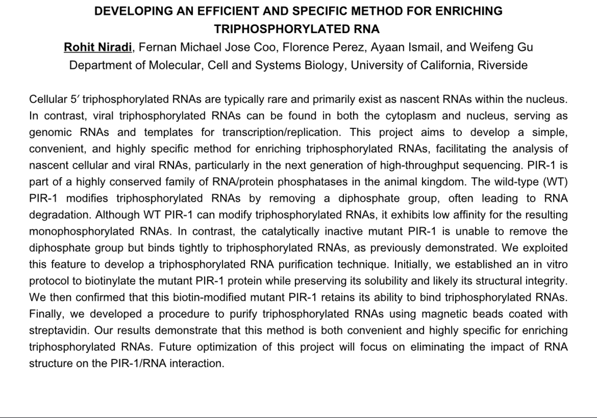

Rohit Niradi EMT-B
Pre Medicine
Personal/Professional Biography
I am a purpose-driven individual committed to excellence in medicine, patient care, and lifelong learning. With a strong foundation in science, a deep sense of empathy, and a disciplined work ethic, I approach the medical field with both intellectual curiosity and human-centered compassion. My journey into medicine has been shaped by a desire to serve others, make a meaningful impact, and continuously grow in both knowledge and character.
Throughout my academic and clinical experiences, I’ve developed a balanced skill set that includes critical thinking, clinical reasoning, and strong interpersonal communication. I thrive in high-pressure environments and take pride in remaining calm, focused, and solutions-oriented when challenges arise. Whether in the classroom, a clinical setting, or volunteering in the community, I aim to bring thoughtfulness, accountability, and a strong moral compass to every interaction.
Medicine, to me, is not just a profession—it is a calling grounded in trust, service, and a commitment to healing. I believe the best physicians combine scientific rigor with emotional intelligence, and I’ve worked hard to cultivate both. I’m especially drawn to environments where collaborative care, evidence-based practice, and patient advocacy are at the forefront.
Discipline has been central to my personal and professional growth. I hold myself to high standards and am committed to showing up every day with intention and integrity. Whether I’m mastering new material, training in clinical skills, or managing complex situations, I approach each task with focus, humility, and a desire to improve. I welcome feedback and believe that true mastery in medicine requires constant refinement and the humility to keep learning.
Equally important to me is my ability to connect with people. I’ve always been attentive to the human experience behind every diagnosis. My ability to listen actively, empathize deeply, and communicate clearly has allowed me to build meaningful rapport with patients, families, and healthcare teams alike. I believe medicine is as much about understanding people’s lives and fears as it is about understanding their symptoms—and that trust is the most powerful tool in any physician’s toolkit.
In addition to my academic and clinical interests, I invest in personal growth through habits that challenge my mental and physical resilience. I believe that the habits we build outside the workplace directly influence our performance inside it. That includes discipline, consistency, and a commitment to health and self-reflection—all qualities I believe are critical in becoming a well-rounded healthcare professional.
As I look ahead, I am eager to contribute to a team that values integrity, innovation, and excellence in patient care. I am motivated not just by the science of medicine, but by the opportunity to care for people at their most vulnerable, to advocate for better systems, and to be a steady, trusted presence in times of uncertainty.
Experience
Research Assistant
• Adhere to laboratory safety procedures to maintain compliance with quality control standards
• Collaborate with researchers to design and execute experiments
• Train and supervise junior technicians in laboratory protocols
Academic Tutor
• Educated and supported peers in Biology, Chemistry, and Human Anatomy & Physiology to strengthen conceptual understanding and improve testperformance
• Designed and integrated hands-on learning activities to enhance cognitive
function, motor skills, and tactile language comprehension
• Encouraged collaborative problem-solving and critical thinking, fostering an
engaging and supportive learning environment
Student Athletic Trainer
• Provided immediate first aid and injury management to student-athletes
under the supervision of certified athletic trainers.
• Mentored and educated underclassmen student trainers, guiding them
through injury assessment, rehabilitation protocols, and preventative care
techniques.
• Assisted in training room operations, ensuring a clean and organized
workspace for effective treatment and rehabilitation
Education
UC Riverside
Dougherty Valley Highschool
Portfolio
